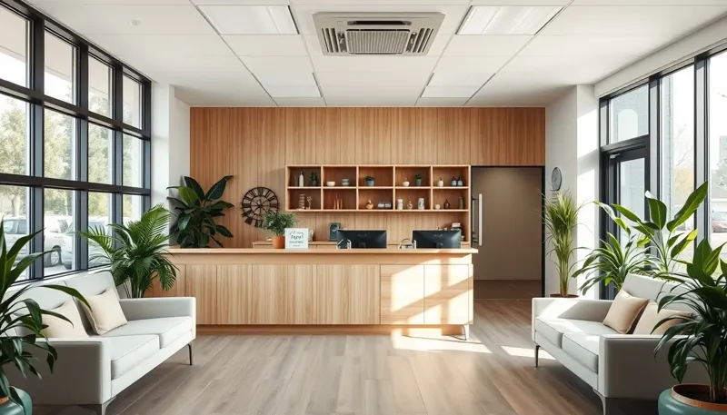

Ветеринарная клиника · Москва
Прованс. Лечим с заботой
Ветеринарный кабинет на Новоясеневском проспекте, 42А. Помогаем домашним животным больше восьми лет: от терапевта до стоматолога.
более 8лет работы с животными
4врача в команде на сайте


О клинике
Ветеринарный кабинет «Прованс» работает с домашними животными уже более восьми лет. В штате есть специалисты всех основных профилей: от терапевта до стоматолога. Врачи подходят к каждому питомцу индивидуально, чтобы снизить стресс.
ТерапияХирургияУльтразвуковая диагностикаКардиологияОнкологияСтоматологияЛабораторная диагностикаВакцинация
Вызов врача на дом
Врач приедет к вам с инструментами и препаратами. Стоимость выезда в разделе «Цены».
Хирургия
Кастрация, стерилизация, удаление новообразований, грыжесечение и другие операции.
Узкие специалисты
Кардиолог, онколог, невролог, эндокринолог, гастроэнтеролог, нефролог.
Как нас найти
- АдресМосква, Новоясеневский проспект, 42А
- МетроНовоясеневская, Битцевский парк
- Телефон+7 (495) 755-36-16
- Почтаvetprovans@gmail.com
- Режим работыПн по записи; Вт–Пт 13:00–20:00; Сб–Вс 13:00–18:00
Сб–Вс 13:00–18:00; Пн только по записи
Запишитесь на приём
Москва, Новоясеневский проспект, 42А · м. «Новоясеневская»